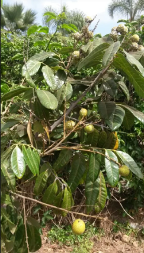

Info Tanaman Banyumanik

KELENGKENG
Kingdom: Plantae
Divisi: Tracheophyta
Class: Magnoliopsida
Ordo: Sapindales
Famili: Sapindaceae
Genus: Dimocarpus
Spesies: Dimocarpus longan
🌱 Budidaya
- Lingkungan: Tanah subur, gembur, tidak tergenang. Curah hujan sedang dan sinar matahari penuh.
- Penanaman: Jarak tanam 6–8 meter antar pohon. Lubang tanam 60x60x60 cm dengan pupuk kandang.
- Perawatan: Siram rutin, terutama saat kemarau. Pemupukan setiap 3 bulan (organik dan NPK). Pemangkasan cabang untuk merangsang pembuahan.
- Perangsangan buah: Gunakan pupuk tinggi kalium (K), air garam, atau kalium klorat (KClO₃) sesuai takaran.
💡 Fun Fact
"Mutiara dari Asia Tenggara" — Kelengkeng terkenal karena rasa manisnya yang khas dan aroma bunganya yang unik, menarik kelelawar sebagai penyerbuk alami di malam hari.
🍃 Manfaat
- Mengandung vitamin C yang membantu menangkal radikal bebas.
- Dapat diolah menjadi manisan, camilan kering, hingga minuman herbal.
- Berpotensi sebagai peluang usaha dari hasil olahan buah yang bernilai jual tinggi.